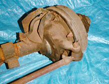
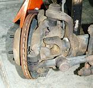
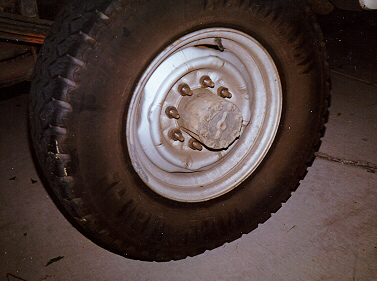
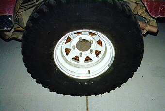
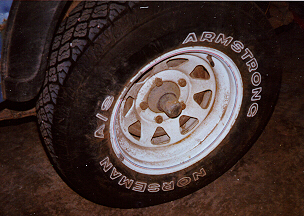

Axles¶
General Information¶
What are hubs?¶
The term hub is used for several different things when it comes to axles. Normally when people refer to a hub, they mean the lock-out or device found in the center of the front wheel. Generally, the piece the wheel bolts to is also referred to as a "hub" which can cause some confusion. The brake hub is the part the wheel bolts on to a front axle and the part the hub or lock-out bolts to. The end of a two piece axle shaft is also sometimes referred to as a hub.
The purpose of the hub is to connect and disconnect the front axle shaft and the wheel. The purpose of the hub is to increase fuel economy and decrease wear and tear on components. If the both hubs are unlocked, the wheels should spin freely and the axle shafts, differential, and front drive shaft will not spin (assuming 4WD isn't engaged). There are three major categories of hubs: permanently locked, automatic, and manual.
Permanently Locked Hubs¶
None of the Jeeps produced today have hubs as an option, they are permanently locked. The brake hub does not even allow the use of hubs. Due to the small wheel bolt pattern (5 on 4.5"), it would be difficult to build a hub strong enough to withstand the load. Modern Jeep bearings are so efficient that hubs would not produce significant savings in fuel or maintenance.
It wasn't until the 70s until hubs became standard equipment on Jeeps. All early Jeeps came standard with "driven plates" which permanently lock the brake hub to the front drive shaft. Most people purchased after market hubs to increase fuel economy and reduce wear and tear.
Automatic Locking Hubs¶
Automatic hubs have never been standard equipment on Jeeps, but there are after market manufactures that have produced them for Jeep vehicles. Automatic hubs lock in when the get input from the axle shafts. One draw back of automatic hubs are that there is no feed back indicating whether the hubs locked in successfully or not. Another draw back is once one hub unlocks, the other hub may never unlock since the load has been removed. This could leave the one axle shaft and the differential spinning.
Manual Locking Hubs¶
When manual hubs are unlocked, the wheels are disconnected from the front axles. Thus the front drive mechanism does not move when in 2WD. The driver must get out of the vehicle and twist the dial on each of the hubs to lock or unlock it. You can leave the hubs locked even when in 2WD and the effect will be similar to the permanently locked hubs. Many people do this during the winter or when off-road all day.
What is Open Knuckle vs. Closed Knuckle¶
The knuckle of a front axle is the part that enables the front axle to steer. There are upper and lower joints that the knuckle swivels on, turning the wheels to the left and right. There are two basic types of knuckles used in Jeep vehicles, one is the closed knuckle and one is the open knuckle. All of the Jeeps built today use open knuckles and all of the Jeeps built until the early 70s used closed knuckles.
The advantage of the open knuckle is it allows a tighter turning radius and it is easier to maintain. The closed structure of the closed knuckle limits its ability to swivel. It also is a bit harder to maintain since the knuckle must be sealed. Closed knuckle axle shaft joints either run in gear lube or in grease in the knuckle, and the lubricant tends to leak out of the knuckle. The open knuckle axles used a sealed cardon cross joint.
 Closed knuckle Dana 25 front axle ('50 CJ-3A).  Open knuckle Dana 30 front axle ('93 Wrangler).
What are Cardon Cross, Birfield, and Rzeppa Joints?¶
Three types of joints have been used in Jeep axles: Cardon Cross, Birfield, and Rzeppa. The joints allow the power to be transferred to the front wheels and the front wheels to turn. They are all types of universal joints and the Cardon Cross are the best. All Jeeps built today used Cardon Cross joints in the front axle shafts.
What is the difference between semi- and full-floating axles?¶
There are two basic types of rear axles used in Jeeps, semi-floating and full-floating. The only 1/4 ton Jeeps that were equipped with a full-floating rear axle were the MAs, MBs, and early CJ-2As. Although it is a full-floating axle, the Spicer 23 used in these Jeeps was a light duty axle. Generally, Jeep trucks with a 3/4 ton rating or better will have a full-floating rear axle.
Full-Floating Axles¶
The basic difference between a semi-floating and full-floating axle is that in a full floating axle, the axle housing bears the full weight of the vehicle rather than the axle shaft. The axle shaft in a full-floating axle "floats" because it does not bear weight, it only transfers power.
 A full-floating rear axle is like a front axle that does not have knuckles. A full floating axle has a spindle that bolts to the axle housing and a hub that rides on two bearings on the spindle. The wheel bolts to the hub. The axle shaft splined end slides into the differential and into the driven plate the bolts to the end of the hub. The driven plate is like a hub or lock-out that does not disengage. Since the shaft doesn't ride on a bearing but is suspended between the differential and the driven plate, they call it full-floating. The picture on the left shows what the hub looks like on a rear axle. This picture is of the hub of a full floating axle on a 3/4 ton Ford F-250.
Semi-Floating Axles¶
Most Jeeps that have 1/2 ton or lower ratings use semi-floating axles, this includes all the Jeep models manufactured today. A semi-floating axle floats on the differential side, meaning it just slides into the differential housing. On the outside end of the shaft is a bearing that is pressed on. Here the axle shaft bears the weight of the vehicle.
What is a C-clip axle?¶
There are some basic variations in the semi floating axles used in Jeep vehicles. One of those variations is the use of the C-clip axle. C-clip axles have a little clip on the inside that stops the shaft from sliding out. The clip snaps on the splined end inside of the differential so that the differential bears the outward pressure of the axle shaft rather than the outside bearing.
Semi-floating axles that do not have a C-clip use the outside bearing that is pressed on to the end of the shaft to bear any outward pressure on the axle shaft. The bearing is retained by the backing plate of the brakes that is bolted to the axle housing. If the backing plate is removed, the shaft will slide right out. To remove a C-clip axle shaft, all that needs to be done is remove the C-clip.
The C-clip axles are used in all Jeeps produced today except the models with the Dana 44 rear. The big disadvantage of these axles is that if the shaft or C-clip breaks the shaft will come right out. Axles that do not have the C-clip are much more likely to be drivable if the shaft breaks. If the shaft breaks between the differential and bearing on a non-C-clip axle, there is a good chance the wheel will not fall off unless the backing plate breaks loose or the bearing slides off the axle shaft.
What is the difference between one piece and two piece shafts?¶
Another variation with semi-floating axles is in the shafts. There are one piece, or flanged, shafts and two piece shafts. The one piece shafts have the bearing pressed on from the differential side and the two piece shafts have the bearing pressed on from the outside after the hub of the shaft is removed.
 This is a picture of my '81 CJ-7 with a Commando Dana 44 rear end that has one piece or flanged shafts. The end of the shaft is visible and as you can see there is no nut or hub on the end of the shaft. The dark semi-circle on the edge is an access hole to remove the brake backing plate.  The picture on the left is a of a '77 CJ-7 with an AMC 20 rear axle with two piece shafts. The shaft nut is protected with a small cap in this case.
All of the new Jeep models use one piece flanged shafts and many of the older Jeeps have axles with two piece shafts.
The two piece shafts are weaker at the end than one piece shafts. The hub of the two piece shaft is normally splined and held on with a single nut. Often times the hub will spin on the end of the shaft ruining the outer splines of the shaft and allowing the shaft to spin freely in the hub. This is a common problem with the AMC 20 used in '76-'86 CJs. The solution is normally to upgrade to after market one piece shafts. Some people have reported that torquing the shaft not way beyond specification will help prevent the hub from spinning on the shaft.
Differentials: Open, Limited Slip & Locking¶
- Open, Limited Slip, and Locking Differentials: General information about the different types of differentials.
How do I Determine if I have a Locker?¶
If you don't know if you have a locker, you probably don't. A Jeep vehicle has never come from the factory with a true locker, although limited slip differentials have been optional for years. The limited slip differentials put in at the factory, over the past 20 years or so, wear out quickly and end up acting like a open differential. By the time you purchase a used Jeep, chances are, the LSD will be worn out.
The easy way to tell if you have a locker is to raise and safely support the rear of the vehicle so both back tires are off the ground. With the engine is off and the transmission and transfer case in gear, turn one wheel by hand. If the other wheel turns in the opposite direction, you are open. If it turns in the same direction, you are locked or have a limited slip. If you have a true locker, with one wheel raised, the engine off, and the transmission and transfer case in gear, the wheel should not turn.
What is the meaning of the Ring and Pinion Ratio?¶
The confusing thing about axle ratios is, the higher the number, the lower the gearing. The ratio is an approximation of the number of turns of input for every one turn of output. This means that if you have 4.27:1 R&P, the drive shaft must turn 4.27 times for every one revolution of both wheels. This means you'll be moving a lot slower in the same gear as someone with 2.73:1 R&P. When you are off-road, lower gears (numerically high) allow you to take obstacles slower and the slower you'll go on steep decents. The slower you go, the more control you have and you are less likely to break something.
So why are 4.27:1 axles lower than 2.73:1 axles you ask? Well, if you look at ratios as fractions, you will see that 1/4.27 is less than 1/2.73. That is like saying 1/4 is less than 1/3.
The way the ratios are calculated is by dividing the number of teeth on the ring gear by the number of teeth on the pinion gear. For example, if you have an 11 tooth pinion and a 47 tooth ring gear, 47/11 is approximately 4.27, or 4.27:1 gears.
Why did Engineers Pick These Weird Ring and Pinion Ratios?¶
The reason R&P ratios come in such odd numbers is so that the ring and pinion do not develop a regular wear pattern. If the same teeth on the pinion were always meshing the same teeth on the ring gear, they would quickly develop a regular wear pattern and the life of the R&P would be reduced. If R&P came in a 10 tooth pinion gear and a 40 tooth ring gear, the same 10 teeth would be hitting the same teeth on the ring gear every revolution. If an odd ratio is chosen, the teeth are meshing with different teeth all the time and no regular wear pattern develops. Despite this logic, R&P in even ratios such as 3.00:1, 4.00:1, 3.50:1, 4.50:1, etc exist for several axles.
Why are High R&P Gears Stronger than Low R&P Gears?¶
The reason lower R&P gear sets are weaker than high R&P gear sets is that lower R&P gear sets use a smaller pinion. A differential housing for an axle can only handle a ring gear so large, so in order to create lower ratios, the pinion must have fewer teeth. The fewer teeth the pinion has, the worse the pinion contact surface is in relation to the ring gear. You may never have had a problem with your Dana 35c with 3.07s, until you swapped in 4.56s. Your Jeep is doing great off-road, but you are breaking teeth. This is why sometimes it pays to do an axle swap.
How do I Determine the Ratio of my Ring and Pinion?¶
The sure way to determine the ratio of you ring and pinion is to remove the differential cover and count the teeth or find the tooth counts stamped on the ring gear. The easiest way to determine the ratios of the R&P is by looking at the tags bolted to the differential cover, or in the case of the AMC 20, by looking up the code stamped on the differential housing. When axles are built, there is normally a tag bolted to the differential cover or a code stamped on the differential housing. The tag may have the ratio specified or it may have the tooth count specified. All of the newer axles specify the ratio and some other build information on the tag. For example, you will likely find "3.07" on a Wrangler axle tag as well as other build codes.
If either the front or rear ratio can be determined, you can be pretty sure the other axle contains the same ratio. If the ratio between the front and rear is significantly different, there will be a lot of drive line binding driving in a straight line on hard surfaces in 4WD. It is not uncommon for the ratios to vary by a few 1/100s, this will not cause a problem.
You may find the tags unreadable or removed by a previous owner. In this case, the easiest thing to do is:
- Raise and safely support one wheel (two if you are locked up). It is easiest to do this with the transfer case in neutral, so make sure you are on a flat surface with the wheels blocked from rolling.
- Turn the wheel so the yoke aligns with a spot on the differential housing you can see from the wheel and mark the yoke
- mark a point on the wheel in relation to somewhere on the body, chalk or a grease pencil will work
- Turn the wheel two full revolutions and count the revolutions of the yoke.
- The number of revolutions of the yoke will be the ratio. For example, if you count 3 3/4 revolutions, the ratio is probably 3.73:1.